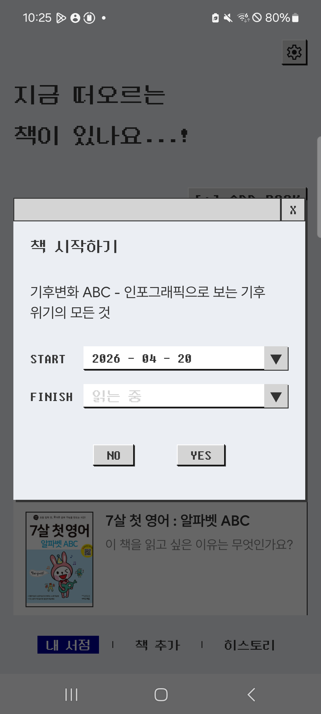
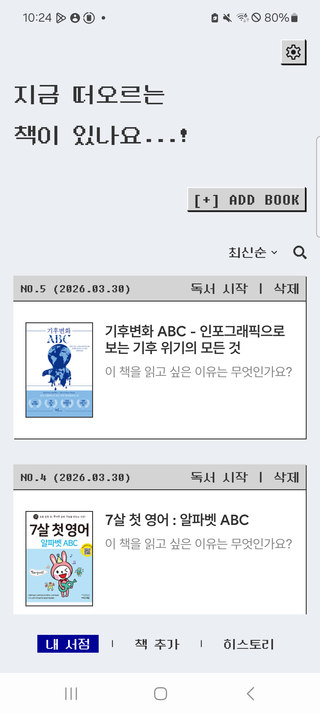
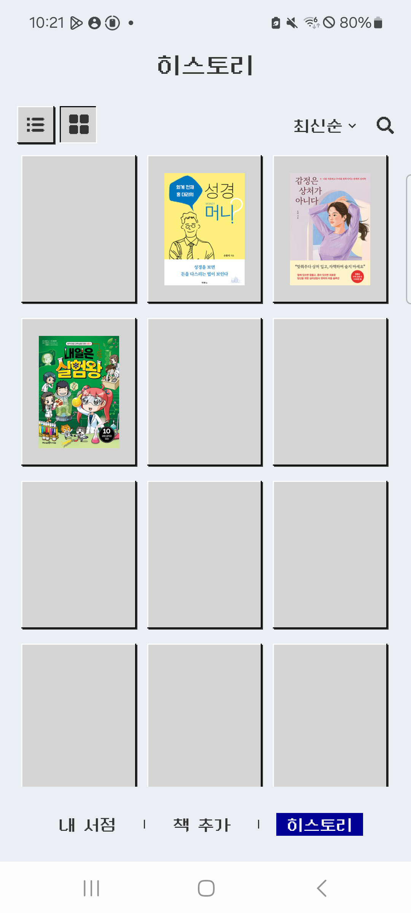
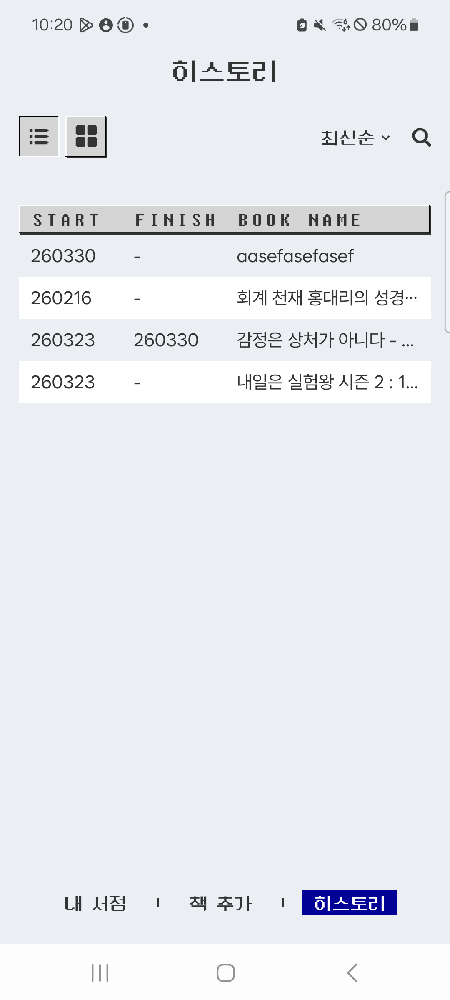
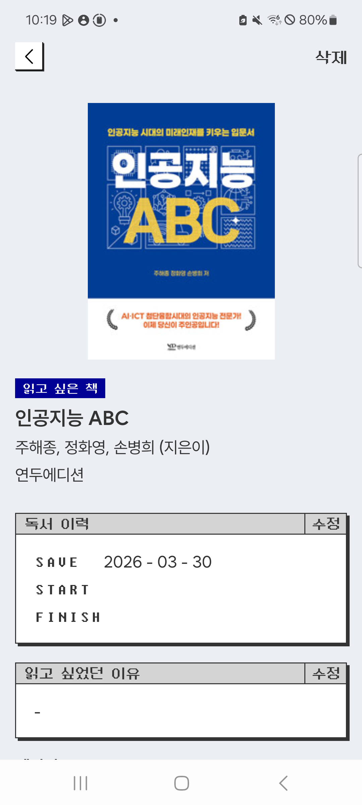
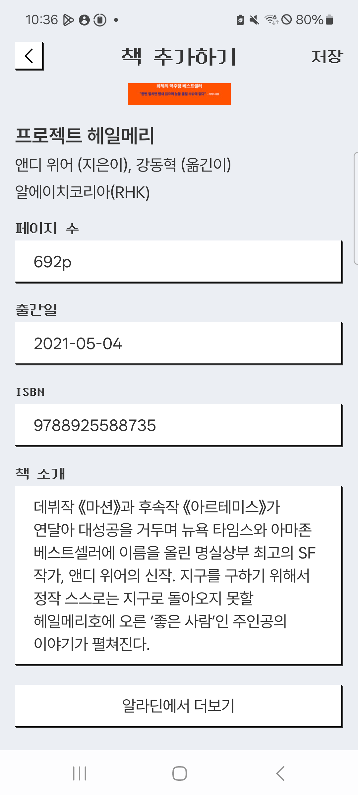
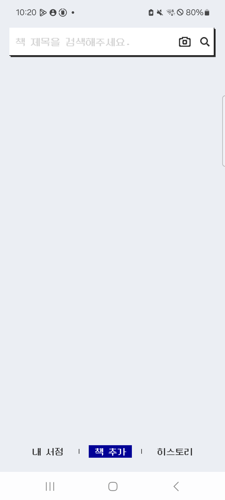
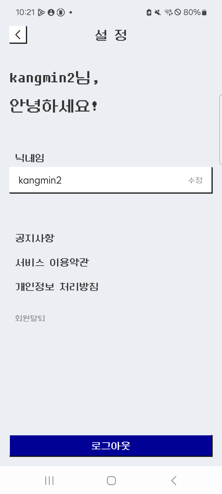
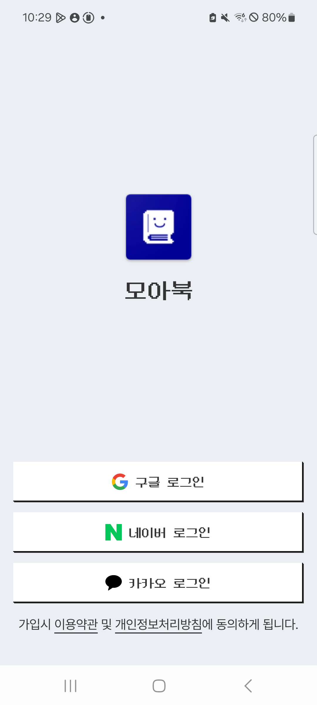
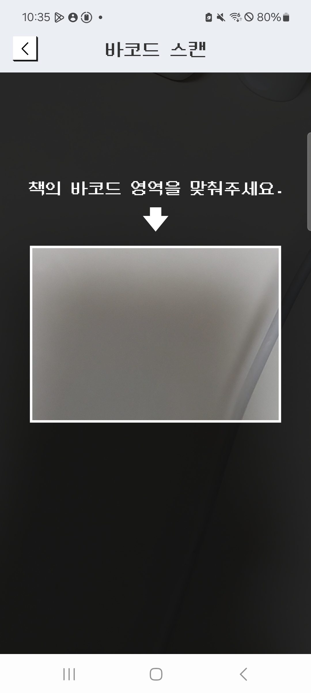

서점↔히스토리 전환 모델 붕괴
독서 시작 → 책이 서점에서 사라지고 "히스토리"로 편입. "히스토리"=다 읽음 연상 때문에 완독으로 오인.
위젯 작업 전 진행한 전체 UX/UI 건강도 점검. 13개 화면·7건의 크로스커팅 이슈·12건의 화면별 개선 카드·19건의 우선순위 액션을 기획자와 개발자가 함께 읽기 위한 문서입니다.
가장 큰 문제는 "내 서점 vs 히스토리"의 정보 구조 신호가 부서져 있고, 레트로 컨셉을 지탱해야 할 타이포·컬러·네이밍 규칙이 화면마다 다르게 적용된다는 점. 사용자가 "독서 시작" 이후 책이 사라졌다고 느끼는 현상은 개별 버그가 아니라 이 문제의 표면 증상입니다.
독서 시작 → 책이 서점에서 사라지고 "히스토리"로 편입. "히스토리"=다 읽음 연상 때문에 완독으로 오인.
읽고 싶은 책 / 읽는 중 / 완독 vs 읽다만 / 읽는 중 / 완독 vs 날짜 기반 암시. 한 상태 3개 이름.
260330(히스토리) · 2026 - 03 - 30(상세) · 2026.03.30(홈) 같은 책의 시작일이 화면마다 다르게 보임.
삭제는 NO/YES, 탈퇴·수정은 취소/저장. 같은 앱에서 매번 읽는 방법을 전환.
4권인데 12칸 기본 표시. 빈 셀과 실 셀 혼재로 "이거 로딩 중인가?" 혼란.
NO.5 위치 기반 번호정렬 바꿀 때마다 같은 책의 번호가 바뀜. 안정 식별자가 아닌데 ID처럼 보임.
START/FINISH/BOOK NAME · [+] ADD BOOK · SAVE/START/FINISH 전 연령대 타겟과 충돌.
바코드 스캔은 검색창 안 작은 아이콘, 수동 입력은 에러 후에만 노출. 주요 기능이 숨어 있음.
각 축별 리뷰 결과. IA 고정 전제에서 평가된 점수이며, Crosscutting 개선이 전체 점수 상승의 가장 큰 레버입니다.
화면별보다 먼저 다뤄야 합니다. 이 7건을 해결해야 컨셉 정합성이 전반적으로 올라갑니다.
같은 책의 "읽고 있는 상태"가 화면마다 다르게 표현됩니다. "읽다만"(TODO)은 "읽다가 만" 처럼 읽히지만 실제로는 아직 시작 안 함. 의미 역전.
| 위치 | 표현 | 소스 |
|---|---|---|
| BookInfo 태그 | 읽고 싶은 책 / 읽는 중 / 완독 | BookInfoScreen.kt:230 |
| MyBookSearch 태그 | 읽다만 / 읽는 중 / 완독 | MyBookSearchScreen.kt:167 |
| History 빈 상태 | "읽고 있는 책을 추가해주세요." | HistoryScreen.kt:286 |
| History 리스트 | (라벨 없음, 날짜만) | — |
TODO → "읽고 싶은 책" 🟦 감정: 기대 INPROGRESS → "읽는 중" 🟡 감정: 현재 DONE → "완독" 🟩 감정: 성취
전 화면에서 이 3개만 사용. "읽다만" 제거.
| 화면 | 포맷 | 예시 |
|---|---|---|
| Home 저장일 | YYYY.MM.DD | 2026.03.30 |
| History 리스트 | YYMMDD (6자리, 연 2자리) | 260330 |
| BookInfo 독서 이력 | YYYY - MM - DD (공백+하이픈) | 2026 - 03 - 30 |
| BookInfo 출간일 | 동 | 2021 - 05 - 04 |
한 가지로 통일. 데이터 밀도 높은 히스토리 리스트는 YY.MM.DD(26.03.30), 상세·홈도 동일. -에 공백 넣는 스타일은 전면 제거.
| 다이얼로그 | 부정 | 긍정 |
|---|---|---|
| 책 삭제 (Home / BookInfo) | NO | YES |
| 회원 탈퇴 | NO | YES |
| 닉네임 편집 | 취소 | 저장 |
| 책 편집 시트 | 취소 | 저장(추정) |
NO/YES 또는 취소/확인·저장 중 택일X(닫기 버튼)은 픽셀 아이콘으로 교체 (MainScreen.kt:116)계획서상 타겟은 전 연령대. 중장년층은 영문+letterSpacing 대문자에 인지 부하 급증. 80~90년대 한국 컴퓨터 경험은 한글 도스 프롬프트·하이텔·천리안 — 한글+픽셀도 동일 컨셉입니다.
START → 시작, FINISH → 끝, BOOK NAME → 책 이름[+] ADD BOOK → [+] 책 추가 (하단 탭과 용어 통일)AddBookScreen(바코드·검색 결과)과 ManualBookInputScreen(수동 입력)이 같은 PixelShadowBox + 흰 배경 스타일을 공유. 전자는 Text만, 후자는 BasicTextField. 시각적으로 구분 불가.
BackgroundGray, 라벨만 강조현재 규칙 추정: 고정 라벨·타이틀 = 픽셀, 사용자 데이터·본문 = 고딕. 합리적이지만 BookInfo의 SAVE/START/FINISH는 라벨인데 영문 대문자, 약관만 유일하게 WantedSansBodySmall 등 예외가 많음. DungGeunMoBody.copy(letterSpacing = 3.2.sp) 같은 즉석 변형이 화면마다 흩어져 있음.
contentDescription = null: HomeScreen.kt:144/206, SearchBookScreen.kt:228 등. 픽셀 아이콘들 스크린리더 미지원TextPrimary.copy(alpha = 0.5f) 등 낮은 알파 텍스트 WCAG AA 4.5:1 검증 필요X 닫기 버튼 (MainScreen.kt:116): contentDescription 없음영향도 순. Before 캡처 + 문제 + 개선안. 공수는 태그로 분리.

사용자가 "독서 시작"을 누르면 책이 서점에서 사라지고 "히스토리"에 편입. 사용자 직접 보고: "책이 꼭 사라진 것만 같음. 히스토리가 다 읽은 게 아니라 읽는 중인데도 완독처럼 보임."
히스토리 → 읽는 중
NO.5 위치 기반 번호 — 정렬 바꾸면 같은 책 번호 변함HomeScreen.kt:168 — index = if (sortDescending) storeBooks.size - index else index + 1
saveOrder로 고정#001처럼 mybookId 기반 고정 ID유일한 책 추가 경로가 우측 작은 박스. 스크롤하면 사라짐. 영문 대문자 + 대괄호 [+]는 전 연령대에 친숙하지 않고, 하단 탭 책 추가와 라벨이 달라 동일 기능인지 모호.
[+] 책 추가로 변경 (하단 탭과 통일)
HistoryScreen.kt:189 — emptyCount = if (bookCount < 12) 12 - bookCount
ceil(count/3)*3
START/FINISH/BOOK NAME + letterSpacing 3.2sp → "터미널 프롬프트" 감성인데 데이터 테이블 헤더로 사용되어 가독성 하락. 데이터는 한글 책 제목인데 헤더만 영문 → 비대칭.
시작 / 완독 / 책 이름25.01.15 → 25.02.10)
라벨 셋 다 영문 대문자+letterSpacing 3.2sp. 날짜 2026 - 03 - 30(공백+하이픈)은 타 화면과 다름. FINISH = 읽는 중 조합이 "완독: 읽는 중"으로 어색.
저장 / 시작 / 완독26.03.30 통일상태 / 읽는 중으로 재사용
외부 API 출처를 버튼 라벨에 그대로 노출 → 알라딘 제휴 앱처럼 보일 위험.
책 정보 더보기로 브랜드 중립화
차별화 기능인데 카메라 아이콘 하나에 라벨 없음. contentDescription = "barcode"로 스크린리더도 약함.
📷 바코드로 책 찾기contentDescription 한글화검색 결과 없을 때만 "책 직접 입력하기" 노출. 검색 성공 상태에서는 사라져 "내가 찾는 책 없음 → 수동 입력" 흐름이 끊김.
직접 입력하기 >SettingScreen.kt:315 — SettingMenuItem("공지사항") { /* disabled */ }. 빈 콜백인데 스타일은 다른 메뉴와 동일.

파괴적 액션(탈퇴)이 회색 작은 텍스트 — 의도된 실수 방지. 단 탭 영역이 텍스트 높이뿐이라 접근성은 떨어지고 오히려 노약자 실수 가능. 로그아웃이 파란 풀폭이라 위계가 뒤집힘.

픽셀 로고 + 텍스트 "모아북" 둘 다 노출 → 브랜드 반복. 소셜 순서 구글→네이버→카카오는 한국 사용자 기본 선호도 역순. 약관 한 줄 Row 강제 — 좁은 폰에서 줄바꿈 위험.
FlowRow로 약관 줄바꿈 안전화
스캔 영역 비율 기준 상단 30~60% — 상단이 넉넉하고 하단 답답. 권한 거부 시 빈 화면 (BarcodeScreen.kt:162).
ACTION_APPLICATION_DETAILS_SETTINGS리뷰에 사용된 20개 화면 캡처. 탭하면 크게 볼 수 있습니다.
공수별로 분리. Quick Win 10건부터 착수 권장 — 위젯 작업 기반 정비.
읽고 싶은 책 / 읽는 중 / 완독) — 전 화면
YY.MM.DD 1종 통일
취소/확인 권장) + X 문자 교체
[+] ADD BOOK → [+] 책 추가
SAVE/START/FINISH → 저장/시작/완독
FlowRow
NO.N 위치 기반 제거 또는 고정 ID
히스토리 → 읽는 중 + 독서 시작 토스트 + 탭 배지
contentDescription · 대비 검증